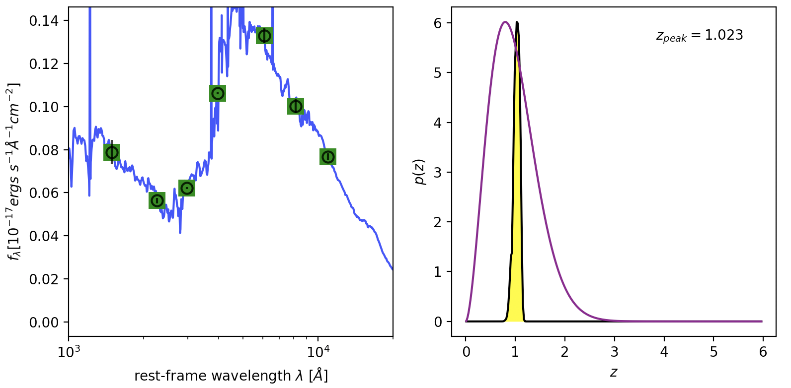

eazy-py
eazy-py doc: https://eazy-py.readthedocs.io/en/latest/
安装
# 从https://github.com/gbrammer/下载并解压eazy-py-master.zip
# 从https://github.com/gbrammer/下载并解压eazy-photoz-master.zip
# 从https://github.com/gbrammer/下载并解压threedhst-py-master.zip
cd eazy-py-master
python setup.py install
rm -rf eazy-photoz
mv ../eazy-photoz-master ./eazy-photoz # template and filter are stored here.
cd eazy-photoz
make
# 在bash.rc(或bash_profile)中添加: export PATH="/Users/njnu-astro/soft/eazy-py-master/eazy-photoz/src:$PATH"
# 在bash.rc(或bash_profile)中添加: export PYTHONPATH="/Users/njnu-astro/soft/threedhst-master:$PYTHONPATH"
source ~/.bash.rc # (或source ~/.bash_profile)
拟合
# quickstart 1: how to run eazy to get z_p (photometric redshift with peak possibility).
cd eazy-py-master
mkdir quickstart
cp -r ../eazy-photoz/inputs/ .
eazy # generates param file
eazy -p zphot.param.default
#-------------------------------------------------------------------------------
# id z_spec z_a z_m1 chi_a z_p chi_p z_m2 odds
# ...
# 1065 -1.0000 0.799 0.852 4.253214e-01 0.799 4.253214e-01 0.866 1.000
# 1066 -1.0000 0.105 1.821 9.397684e+00 1.787 9.536160e+00 1.984 0.931
# 1067 0.1390 0.196 0.186 2.356639e-01 0.196 2.356639e-01 0.189 1.000
# Done fitting redshifts. Took 15 seconds.
画图
# quickstart 2: 利用threedhst-master中提供的接口，读取结果和画图
cd eazy-py-master/quickstart
#-------------- 创建一个新的python脚本, quickstart.py --------------------------
import numpy as np
import os
import matplotlib.pyplot as plt
plt.rcParams['font.family'] = 'sans-serif'
plt.rcParams['font.serif'] = ['Helvetica']
plt.rcParams['patch.linewidth'] = 0.
plt.rcParams['patch.edgecolor'] = 'black'
plt.rcParams['text.usetex'] = False
import threedhst.eazyPy as eazy
import threedhst.catIO as catIO
# 参考plotExampleSED程序
#axes = eazy.plotExampleSED(idx=17, writePNG=False, MAIN_OUTPUT_FILE='photz',
# OUTPUT_DIRECTORY='OUTPUT', CACHE_FILE='Same', lrange=[3800, 3.e4],
# axes=None, individual_templates=True, fnu=False)
#plt.show()
#plt.savefig('eazy_fit.png'); plt.close()
OUTPUT_DIRECTORY='OUTPUT';
MAIN_OUTPUT_FILE='photz';
zout = catIO.Table(OUTPUT_DIRECTORY+'/'+MAIN_OUTPUT_FILE+'.zout')
qz = np.arange(len(zout['id']))
idx = 17 # 画第18个源
#------- 画图
alph = 0.8; scale_flambda=1.e-17
lrange = [1000.0, 2E4] # 设定显示的波长范围，单位：埃
fig, axes = plt.subplots(1, 2, figsize = (8, 4))
fig.subplots_adjust(wspace=0.18, hspace=0.0,left=0.09,bottom=0.15,right=0.98,top=0.98)
sed = eazy.getEazySED(idx, MAIN_OUTPUT_FILE='photz', OUTPUT_DIRECTORY='./OUTPUT',
CACHE_FILE='Same', scale_flambda=1.e-17, verbose=False,
individual_templates=False)
z_peak = zout['z_peak'][idx]
xrest = 1 + z_peak
lambdaz, temp_sed, lci, obs_sed, fobs, efobs = sed
axes[0].scatter(lci/xrest, obs_sed, color='orange', zorder=2)
axes[0].scatter(lci/xrest, fobs, color='green', marker='s', s=150, zorder=2)
snlim = 3; highsn = fobs/efobs > snlim
axes[0].errorbar(lci[highsn]/xrest, fobs[highsn], yerr=efobs[highsn], ecolor='black',
color='black',fmt='o',alpha=alph, markeredgecolor='black', markerfacecolor='None', markeredgewidth=1.5, ms=8, zorder=2)
axes[0].errorbar(lci[~highsn]/xrest, fobs[~highsn], yerr=efobs[~highsn], ecolor='0.7',
color='black',fmt='o',alpha=alph, markeredgecolor='0.7', markerfacecolor='None', markeredgewidth=1.5, ms=8, zorder=1)
axes[0].plot(lambdaz/xrest, temp_sed, linewidth=1.5, color='blue',alpha=alph, zorder=-3)
axes[0].set_xlim(lrange[0],lrange[1])
axes[0].set_ylim(-0.05*max(obs_sed),1.1*max(fobs))
axes[0].set_xlabel(r'rest-frame wavelength $\lambda%s$ [$\AA$]' )
axes[0].set_ylabel(r'$f_\lambda [10^{−17} ergs\ s^{−1} Å^{−1} cm^{−2}]$')
axes[0].set_xscale('log')
## p(z)
zgrid, pzi, prior = eazy.getEazyPz(17, MAIN_OUTPUT_FILE='photz', OUTPUT_DIRECTORY='./OUTPUT',
CACHE_FILE='Same', binaries=None, get_prior=True)
axes[1].plot(zgrid, pzi, color='black')
axes[1].plot(zgrid, prior/prior.max()*pzi.max(), color='purple', label = 'prior')
axes[1].text(0.9, 0.9, r'$z_{peak} = %.3f$'%z_peak, transform = axes[1].transAxes, ha = 'right' )
axes[1].fill_between(zgrid,pzi,np.zeros(zgrid.size),color='yellow', label = 'possibility')
axes[1].set_xlabel(r'$z$')
axes[1].set_ylabel(r'$p(z)$' )
plt.savefig('eazy_fit_2.png')
plt.show()
plt.close()
